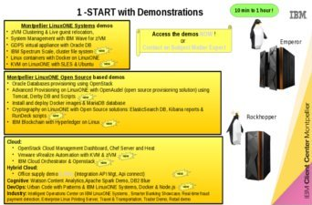
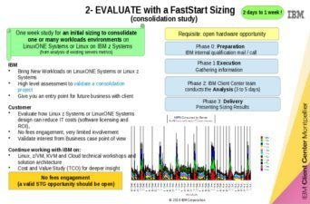
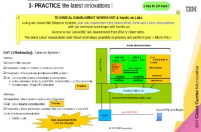
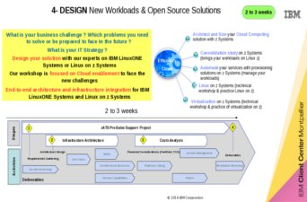
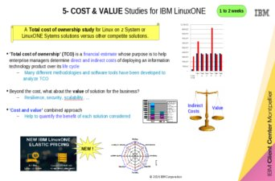

zATS LinuxONE & Linux on z





SebLL Cognitive Demo Center is a local laboratory web page created to hold simple demos use cases. It demonstrates some of the latest evaluations and capabilities created by our team. This website is optimized for 1024X768 screen resolution. It is also XHTML & CSS valid.
This site mentions cognitive because its evolution will contain cognitive content through the usage of Watson APIs. Hope you will enjoy what you will see in the next demo ^^ !
Our Demonstrations

Openstack on z
Utilization of the Openstack Cloud Management Dashboard running on LinuxONE Systems.

Docker on z
Using the recently announced Linux distribution (April 2016), Ubuntu on z System, discover Docker through a simple set of commands.

KVM on z
KVM is running on IBM z Systems. Learn here how to use it and discover its capabilities through standard commands you already know on your distributed platform.
KVM is running on IBM z Systems. Learn here how to use it and discover its capabilities through standard commands you already know on your distributed platform.

DevOps on Linux z
Fast, Efficient, Secure and Scalable Development with DevOps Solutions running on Linux on z Systems or LinuxONE Systems. An end ot end scenario to deploy a new mobile application, including the IBM MobileFirst Platform
Fast, Efficient, Secure and Scalable Development with DevOps Solutions running on Linux on z Systems or LinuxONE Systems. An end ot end scenario to deploy a new mobile application, including the IBM MobileFirst Platform